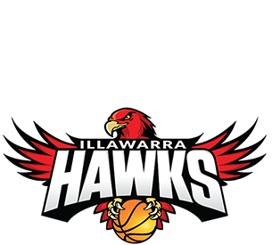
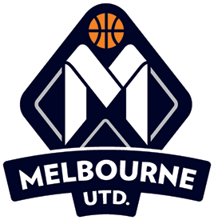
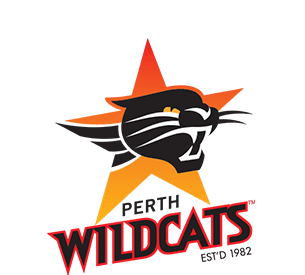
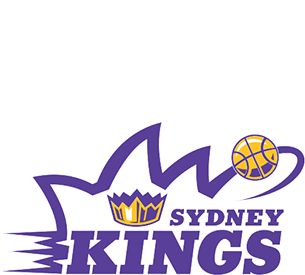
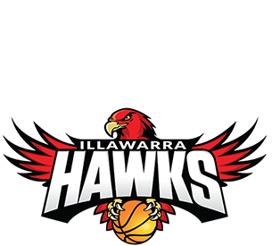
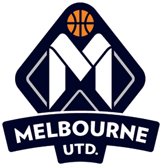
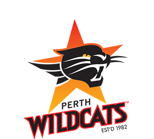
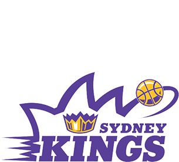

×
This site displays who currently holds the NBL championship belt
the belt passes from one team to another after a loss, the winner then takes possesion. The belts first champions were the Saints back in 1979.
I am currently working on a scraper and app to do this automatically, but for now it is manual
This site was created using sass and flexbox by Jeremy Pittard
 






